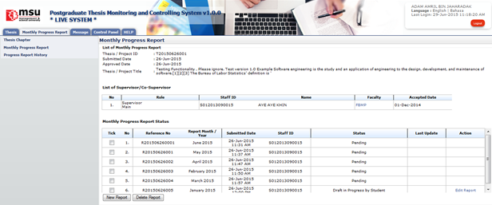

Figure 18: Monthly Progress Report
Pre-condition
- After approval by senate
- After supervisor/co-supervisor accept invitation
- New monthly progress report can be submitted 1 Month after supervisor/co-supervisor accept the invitation
Post-condition
- Monthly progress report can be submit
- Condition to delete report is the status of the report is “Draft in Progress By Student”.
Steps:-
- Click on the Monthly Progress Report tab on the Top panel
- Click on the Monthly Progress Report menu on the Left panel
- System will display the detail regarding monthly progress report.
- To proceed, click New Report button.
- To delete, tick on the checkbox on the left side of the table shown above (Tick column) and click Delete Report button.
Created with the Personal Edition of HelpNDoc: Produce electronic books easily